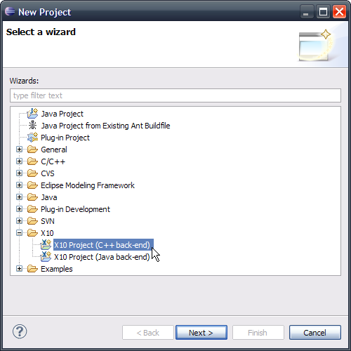
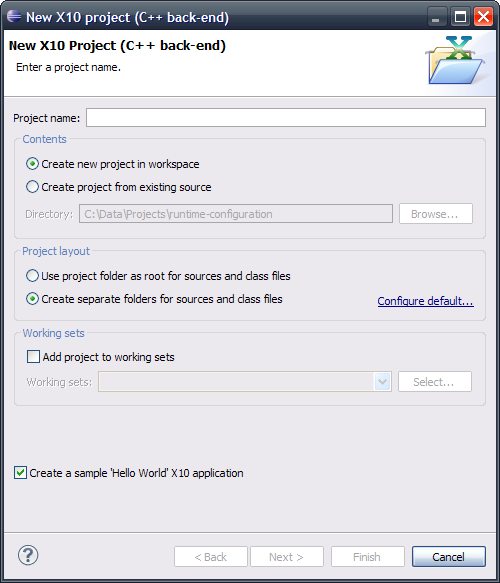
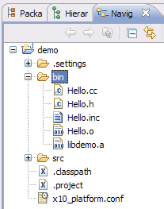

This section describes how to create an X10 project for generating C++ files as opposed to Java.
With this back-end,
the generation of files, compilation and execution can be either be local or remote.
This section first describes how to create and validate a local X10 project with the C++ back-end.
See X10 Remote Project with C++ Back-End for the basics on setting up a remote project.
Once you have Eclipse and X10DT installed, you should be able to create X10 projects through the traditional project creation wizard dialog: Then you should be able to select an X10 project with C++ back-end as shown below.
Alternatively, if you have activated the X10 Perspective , you should be able to access the next menu items sequence , or by doing a right-click in the Package Explorer view and selecting .
The next dialog page will come up: Enter a project name and after that you should be able to click on ,
or if you want further customizations. For instance, let's call the project demo.
At that point, an X10 project named demo, with C++ back-end in local mode, with default
communication interface and compilation commands, should be created.
The project should now contain the files shown here: FIXME: need screenshot without platform.conf file
You can check that the generation of C++ files occurred correctly by checking the content of the project
output folder. One way to check that is to go to the Eclipse Navigator view, and click under the project folder.
In the case of the demo project, this should give the next list of files.

Note that a refresh on the output folder directory (named 'bin' here) may be necessary.
To refresh a project or folder/directory, right-click and select 'Refresh'.
Continue to Running/Launching an X10 Application with the C++ back-end